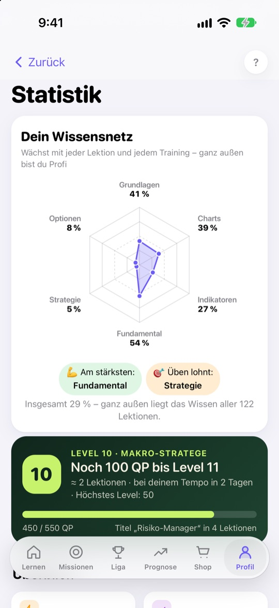

Indikatoren & Kennzahlen
KGV einfach erklärt: Wann ist eine Aktie günstig?
Das KGV ist die bekannteste Kennzahl, um Aktien zu bewerten. Es zeigt, wie viele Jahresgewinne du für eine Aktie bezahlst. Hier lernst du, wie du es berechnest, richtig vergleichst und wo es dich in die Irre führen kann.

Das KGV (Kurs-Gewinn-Verhältnis) setzt den Aktienkurs ins Verhältnis zum Gewinn, den ein Unternehmen pro Aktie erwirtschaftet. Es beantwortet eine einfache Frage: Wie viele Jahresgewinne bezahlst du, wenn du die Aktie heute kaufst? Deshalb ist das KGV die bekannteste Kennzahl der Aktienbewertung, auf Englisch P/E Ratio (Price-to-Earnings).
KGV berechnen: die Formel
Ein Beispiel: Eine Aktie kostet 100 €, das Unternehmen verdient im Jahr 5 € je Aktie. Das KGV beträgt 100 ÷ 5 = 20. Du bezahlst also das 20-Fache des aktuellen Jahresgewinns.
Dasselbe Ergebnis kommt heraus, wenn du den Börsenwert des Unternehmens durch den Jahresgewinn teilst. Ein Unternehmen mit 50 Milliarden € Börsenwert und 2,5 Milliarden € Gewinn hat ein KGV von 20.
| Aktienkurs | Gewinn je Aktie | KGV | Gewinnrendite |
|---|---|---|---|
| 100 € | 10 € | 10 | 10 % |
| 100 € | 5 € | 20 | 5 % |
| 100 € | 2 € | 50 | 2 % |
Die Gewinnrendite: das KGV umgedreht
Teilst du den Gewinn durch den Kurs, erhältst du die Gewinnrendite: 1 ÷ KGV. Ein KGV von 20 entspricht einer Gewinnrendite von 5 %. So lässt sich eine Aktie grob mit anderen Anlagen vergleichen. Aber Vorsicht: Der Gewinn wird nicht komplett an dich ausgezahlt, und er kann steigen oder fallen.
Was ist ein gutes KGV?
Eine feste Grenze gibt es nicht. Ein niedriges KGV kann ein Schnäppchen sein oder ein Warnsignal. Ein hohes KGV kann übertrieben sein oder starkes Wachstum widerspiegeln. Sinnvoll ist das KGV vor allem im Vergleich:
- Mit der Branche: Software- und Technologiefirmen haben meist höhere KGVs als Banken, Versicherer oder Autobauer, weil Anleger ihnen mehr Wachstum zutrauen.
- Mit der eigenen Geschichte: Liegt das KGV deutlich über oder unter dem eigenen Durchschnitt der letzten Jahre?
- Mit dem Wachstum: Ein Unternehmen, dessen Gewinn jedes Jahr um 20 % wächst, darf teurer sein als eines, dessen Gewinn stagniert.
Das PEG: KGV und Wachstum zusammen
Das PEG teilt das KGV durch das erwartete jährliche Gewinnwachstum in Prozent. Ein KGV von 30 bei 30 % Wachstum ergibt ein PEG von 1, ein KGV von 15 bei 5 % Wachstum ein PEG von 3. Die zweite Aktie ist nach dem KGV günstiger, im Verhältnis zum Wachstum aber teurer. Werte um 1 gelten oft als fair, die Prognose des Wachstums ist allerdings unsicher.
Rückblick oder Erwartung?
| Variante | Grundlage | Vorteil | Nachteil |
|---|---|---|---|
| KGV auf Basis der letzten 12 Monate | tatsächlich erzielter Gewinn | beruht auf echten Zahlen | schaut nur zurück |
| erwartetes KGV (Forward-KGV) | geschätzter Gewinn der nächsten 12 Monate | berücksichtigt die Zukunft | Schätzungen können danebenliegen |
| Shiller-KGV (CAPE) | Durchschnitt der inflationsbereinigten Gewinne der letzten 10 Jahre | glättet Ausreißer und Konjunkturzyklen | reagiert langsam |
Achte beim Vergleichen darauf, dass du dieselbe Variante nimmst. Ein erwartetes KGV von 18 und ein rückblickendes KGV von 25 können zum selben Unternehmen gehören.
Wo das KGV in die Irre führt
- Verluste: Macht ein Unternehmen Verlust, ist das KGV negativ und nicht sinnvoll. Bei jungen Wachstumsfirmen schaut man dann eher auf den Umsatz.
- Sondereffekte: Ein einmaliger Gewinn aus einem Verkauf drückt das KGV künstlich, eine einmalige Abschreibung treibt es hoch.
- Zyklische Branchen: Bei Rohstoff- oder Chemiefirmen ist das KGV oft am niedrigsten, wenn die Gewinne gerade ihren Höhepunkt erreichen, also kurz bevor sie wieder fallen.
- Schulden: Das KGV zeigt nicht, wie viele Schulden ein Unternehmen hat. Dafür braucht es Bilanz und Cashflow.
- Gewinn ist nicht Geld: Der Gewinn kann durch Buchhaltungsregeln anders aussehen als der Geldfluss. Profis schauen deshalb zusätzlich auf den Free Cashflow.
KGV und ETFs
Auch für ganze Indizes wird ein KGV berechnet, etwa für den DAX oder den S&P 500. Es zeigt, wie teuer der Markt insgesamt im Vergleich zu seinen Gewinnen ist. Wer breit mit ETFs investiert, muss keine einzelnen KGVs vergleichen, sollte die Kennzahl aber verstehen, wenn in den Nachrichten von einem „teuren“ oder „günstigen“ Markt die Rede ist. Mehr zum Index im Artikel Was ist der DAX?.
Kennzahlen üben ohne echtes Geld
In InQuestly erklärt die Lektion „Bewertung: KGV & Co.“ im Gratis-Kurs Fundamentaldaten & Kennzahlen, wie Anleger ein Unternehmen bewerten, zusammen mit Umsatz, Marge, Bilanz und Dividende. Ein kurzes Quiz prüft nach jeder Lektion, ob es sitzt. Wer danach langfristig anlegen will, findet den nächsten Schritt im Artikel Investieren lernen.
Häufige Fragen
Was ist das KGV einfach erklärt?
Das Kurs-Gewinn-Verhältnis zeigt, wie viele Jahresgewinne du für eine Aktie bezahlst. Ein KGV von 20 heißt: Der Kurs entspricht dem 20-Fachen des Gewinns je Aktie.
Wie berechne ich das KGV?
Aktienkurs geteilt durch den Gewinn je Aktie. Bei 100 € Kurs und 5 € Gewinn je Aktie beträgt das KGV 20.
Was ist ein gutes KGV?
Das hängt von Branche, Wachstum und Zinsniveau ab. Sinnvoll ist der Vergleich mit ähnlichen Unternehmen und mit dem eigenen Durchschnitt der Aktie.
Ist ein niedriges KGV immer gut?
Nein. Ein niedriges KGV kann auch zeigen, dass Anleger mit sinkenden Gewinnen rechnen oder dass ein Sondereffekt den Gewinn aufbläht.
Was ist das Shiller-KGV?
Eine Variante, die den Kurs durch den Durchschnitt der inflationsbereinigten Gewinne der letzten zehn Jahre teilt. Sie glättet Ausreißer und wird oft für ganze Märkte genutzt.
Was bedeutet ein negatives KGV?
Das Unternehmen hat Verlust gemacht. Dann ist das KGV für die Bewertung nicht aussagekräftig.
Was ist der Unterschied zwischen KGV und Gewinnrendite?
Die Gewinnrendite ist der Kehrwert des KGV. Ein KGV von 20 entspricht einer Gewinnrendite von 5 %.
Dieser Artikel dient der Bildung und ist keine Anlageberatung. Beispiele sind vereinfacht und ohne Steuern dargestellt.